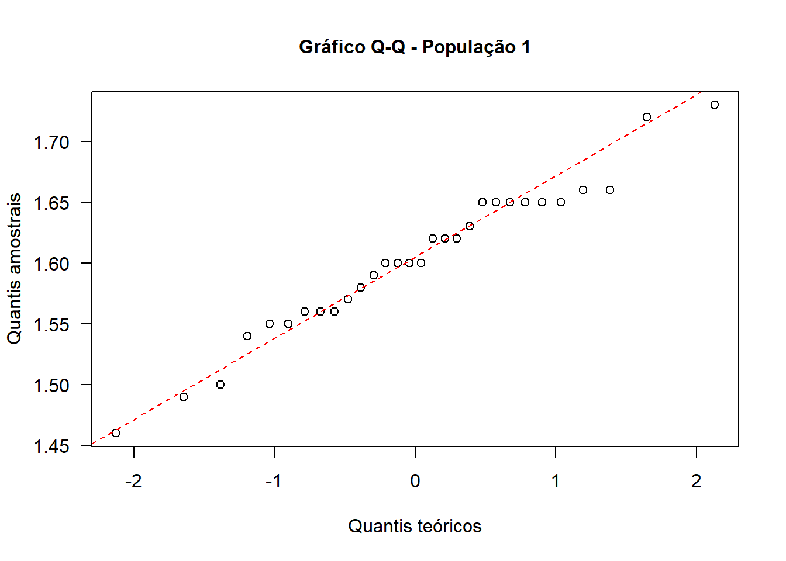

Capítulo 14 Teste t para Amostras Independentes
Também conhecido como teste t de medidas independentes ou teste t de amostras independentes. O teste t é usado quando há duas condições experimentais e participantes diferentes foram designados para cada condição.
14.1 Pacotes necessários
pacman::p_load(readxl,
dplyr,
car,
rstatix,
ggplot2,
knitr,
kableExtra,
lsr,
dabestr)14.2 Dados
O banco de dados a ser carregado encontra-se aqui. Ele é constituído por medidas de altura (em metros) de dois grupos de mulheres, pertencentes a duas regiões geográficas hipotéticas diferentes. Salve o mesmo no diretório de trabalho.
Crie um objeto dados para recebê-lo, a partir do diretório de trabalho, executando o seguinte código:
dados <- read_excel ("C:/Users/petro/Dropbox/Git_repositório/Arquivos/dadosPop.xlsx")A função read_excel() do pacote readxl carregou o arquivo dadosPop.xlsx. Os dados podem ser visualizados, usando a função glimpse() do pacote dplyr.
glimpse (dados)## Rows: 60
## Columns: 3
## $ id <dbl> 1, 2, 3, 4, 5, 6, 7, 8, 9, 10, 11, 12, 13, 14, 15, 16, 17, 18, …
## $ altura <dbl> 1.50, 1.56, 1.63, 1.66, 1.60, 1.65, 1.49, 1.60, 1.56, 1.58, 1.5…
## $ pop <dbl> 1, 1, 1, 1, 1, 1, 1, 1, 1, 1, 1, 1, 1, 1, 1, 1, 1, 1, 1, 1, 1, …Observa-se que temos 60 mulheres, sendo 30 moradoras na região 1 e 30 na região 2. Foram coletadas `as alturas em metros de todas as participantes.
Se quisermos exibir os dados de uma forma, visualmente, mais elegante e em uma apresentação mais amigável, pode-se usar a função kable() do pacote knitr e a função kable_styling() do pacote kableExtra. A função kable () usa a função head() embutida. Ao executar os códigos, serão exibido apenas 10 linhas do banco de dados (se não for especificado, mostra apenas 6 linhas). Isto evita uma poluição visual:
kable(head(dados, 10),
col.names = c("Id", "Altura", "População")) %>% kable_styling(full_width = FALSE, bootstrap_options = c("striped", "hover", "condensed", "responsive"))| Id | Altura | População |
|---|---|---|
| 1 | 1.50 | 1 |
| 2 | 1.56 | 1 |
| 3 | 1.63 | 1 |
| 4 | 1.66 | 1 |
| 5 | 1.60 | 1 |
| 6 | 1.65 | 1 |
| 7 | 1.49 | 1 |
| 8 | 1.60 | 1 |
| 9 | 1.56 | 1 |
| 10 | 1.58 | 1 |
O argumento full_width =FALSE, reduz a largura da tabela e a boostrap_options = admite vários opções além da basic, isoladas ou combinadas:
- striped: adiciona listras zebradas à tabela;
- hover: adiciona cor de fundo cinza nas linhas da tabela;
- condensed: torna a tabela mais compacta;
- responsive: faz rolagem horizontal quando há menos de 768 px (20,32 cm).
14.3 Exploração dos dados
Observando a saída da função glimpse (), verifica-se que todas as variáveis estão como variáveis numéricas (dbl = double). A variável pop deve ser transformada para fator:
dados$pop <- as.factor(dados$pop)Agora, se observarmos, novamente, a estrutura do banco de dados, usando a função glimse (), novamente, a variável pop está como fator.
glimpse (dados)## Rows: 60
## Columns: 3
## $ id <dbl> 1, 2, 3, 4, 5, 6, 7, 8, 9, 10, 11, 12, 13, 14, 15, 16, 17, 18, …
## $ altura <dbl> 1.50, 1.56, 1.63, 1.66, 1.60, 1.65, 1.49, 1.60, 1.56, 1.58, 1.5…
## $ pop <fct> 1, 1, 1, 1, 1, 1, 1, 1, 1, 1, 1, 1, 1, 1, 1, 1, 1, 1, 1, 1, 1, …14.3.1 Medidas resumidoras de interesse
Será calculada a média e o desvio padrão da variável altura de acordo com a população (pop), usando a função group_by () do pacote dplyr e get_summary_stats() do pacote rstatix:
dados1 <- dados %>%
group_by (pop) %>%
get_summary_stats (altura,
type = "mean_sd")
dados1## # A tibble: 2 × 5
## pop variable n mean sd
## <fct> <chr> <dbl> <dbl> <dbl>
## 1 1 altura 30 1.60 0.062
## 2 2 altura 30 1.39 0.074Para maiores informações sobre estes pacotes acione a ajuda.
### Observação visual dos dados, através de boxplots
boxplot(dados$altura~dados$pop,
ylab = "Altura de mulheres (m)",
xlab = "População",
col = c("peachpuff", "salmon"),
las = 1)
stripchart (dados$altura~dados$pop,
method = "jitter",
jitter = 0.05,
vertical = TRUE,
col = "red",
pch = 20,
add = TRUE)14.4 Definição das hipóteses estatísticas
Será usado um teste bicaudal:
\(H_{0}\): \(\mu_{pop1} = \mu_{pop2}\)
\(H_{A}\): \(\mu_{pop1} ≠ \mu_{pop2}\)
14.5 Regra de decisão
O nível significância, \(\alpha\), escolhido é igual a 0.05. A distribuição t é dependente dos graus de liberdade, dados por:
No exemplo,
n1 <- length(which(dados$pop == "1"))
n1## [1] 30n2 <- length(which(dados$pop == "2"))
n2## [1] 30gl <- n1 + n2 -2
gl## [1] 58Para um \(\alpha\) = 0.05, o valor crítico de t para gl = 58 e uma hipótese alternativa bicaudal é obtido com a função qt (p, df), onde
\(df = gl\) e
\(p = 1 - \alpha/2\)
alpha <- 0.05
round (qt((1-alpha/2), gl), 3)## [1] 2.002Portanto, se
\(|t_{calculado}| < t_{crítico}|\) -> não rejeitar \(H_{0}\)
\(|t_{calculado}| > t_{crítico}|\) -> rejeitar \(H_{0}\)
14.6 Avaliação dos pressupostos
O teste t assume que:
- As amostras são independentes;
- Deve haver distribuição normal. Entretanto, quando as amostras são grandes (teorema do limite central), isso não é muito importante;
- Exista homocedasticidade, ou seja, as variâncias devem ser iguais.
14.6.1 Avaliação da normalidade
qqnorm(dados$altura[dados$pop == "1"],
pch = 1,
frame = FALSE,
main = "Gráfico Q-Q - População 1",
ylab = "Quantis amostrais",
xlab = "Quantis teóricos",
cex.lab = 1,
cex.axis = 1,
cex.main = 1,
las = 1)
qqline(dados$altura[dados$pop == "1"],
col = "red",
lty = 2)
box()
qqnorm(dados$altura[dados$pop == "2"],
pch = 1,
frame = FALSE,
main = "Gráfico Q-Q - População 2",
ylab = "Quantis amostrais",
xlab = "Quantis teóricos",
cex.lab = 1,
cex.axis = 1,
cex.main = 1,
las = 1)
qqline(dados$altura[dados$pop == "2"],
col = "red",
lty = 2)
box()by (data = dados$altura,
INDICES = dados$pop,
FUN = shapiro.test) ## dados$pop: 1
##
## Shapiro-Wilk normality test
##
## data: dd[x, ]
## W = 0.97051, p-value = 0.5531
##
## ------------------------------------------------------------
## dados$pop: 2
##
## Shapiro-Wilk normality test
##
## data: dd[x, ]
## W = 0.94846, p-value = 0.1537Tanto o QQPlot como o teste de Shapiro-Wilk mostram que os dados se ajustam à distribuição normal.
14.6.2 Avaliação da homogeneidade das variâncias, usando o teste de Levene
leveneTest(altura ~ pop, center = mean, data = dados)## Levene's Test for Homogeneity of Variance (center = mean)
## Df F value Pr(>F)
## group 1 0.1599 0.6907
## 58O valor P do teste de Levene é > 0.05, indicando que não é possível rejeitar a hipóteses nula de igualdade das variâncias.
14.7 Cálculo da estatística do teste
Usamos a função t.test() que tem os seguintes argumentos:
t.test(altura ~ pop,
data = dados,
alternative = "two.sided",
paired = FALSE,
conf.level = 0.95,
var.equal=TRUE)##
## Two Sample t-test
##
## data: altura by pop
## t = 12.056, df = 58, p-value < 2.2e-16
## alternative hypothesis: true difference in means between group 1 and group 2 is not equal to 0
## 95 percent confidence interval:
## 0.1767997 0.2472003
## sample estimates:
## mean in group 1 mean in group 2
## 1.602333 1.390333- t é o valor estatístico do teste t,
- df são os graus de liberdade ,
- p-value é o valor P do teste t.
- conf.int é o IC95% da diferença média;
- sample estimates são o valores médios das populações 1 e 2.
NOTA: Quando as variâncias não forem homogêneas, mas houver normalidade, pode ser usado o teste t trocando o argumento var.equal=TRUE por var.equal=FALSE que corresponde a aproximação de Welch para os graus de liberdade.
14.8 Conclusão
Conclui-se, portanto, que a altura das mulheres da população 1 é diferente da altura das mulheres da população 2, a diferença (\(\mu_{pop1} - \mu_{pop2}\)) encontrada é estatisticamente significativa (t = 12,06, gl = 58, P = 2,2 x 10^-16), com uma confiança de 95%.
14.8.1 Apresentação gráfica dos resultados
Podemos exibir o gráfico da diferença média, descrito por Gardner-Altman (1986), usando o pacote dabestr com as funções dabest (), mean_diff () e plot () com um objeto dabest_effsize (mean_diff, por exemplo). Para detalhes consulte dabestr.
dois.grupos <-
dados %>%
dabest(pop, altura,
idx = c("2", "1"),
paired = FALSE)
difMedia <- mean_diff(dois.grupos, ci = 95)
plot(difMedia,
color.column = pop,
palette = c("pink4", "salmon3"),
show.legend = F,
rawplot.ylabel = "Altura de Mulheres (m)",
effsize.ylabel = "Diferença Média")14.9 Tamanho do efeito
O tamanho do efeito (effect size) é uma medida quantitativa da magnitude do efeito. Quanto maior o tamanho do efeito, mais forte é a relação entre duas variáveis.
No exemplo mostrado, como não há uma diferença estatisticamente significativa, não faz sentido se verificar o tamanho do efeito.
Quando existe um efeito significativo (P < 0.05), o valor do tamanho do efeito mostrará se o efeito foi pequeno, médio ou grande. Isso tem mais relevância do que simplesmente informar o tamanho do valor P.
Comumente, calcula-se o d de Cohen para encontrar a magnitude do efeito na comparação entre duas médias. É também conhecida como diferença média padronizada.
\[ d = \frac{\overline{x}_{1} - \overline{x}_{2}}{s_0} \]
Onde \(s_{0}\) é o desvio padrão combinado das duas médias:
\[ s_0 = \sqrt\frac{(n_1-1)s_1^2 + (n_2-1)s_2^2}{n_1+n_2 -2} \]
O R tem uma função cohensD () do pacote lsr para calcular a magnitude do efeito.
cohensD (altura ~ pop, data = dados)## [1] 3.112768Os pesquisadores costumam usar as seguintes diretrizes (LAKENS, 2013) para interpretar o resultado:
| d | Tamanho do Efeito |
|---|---|
| \(< 0.2\) | insignificante; negligenciável |
| \(0.2 < 0.5\) | pequeno |
| \(0.5 < 0.8\) | médio |
| \(\ge 0.8\) | grande |
O pacote dabestr fornece funções que permitem também calcular a magnitude do efeito. São as funções cohens_d () e hedges_g () que é correção exata de Hedges para o d de Cohen, ambas usam um objeto gerado pela função dabest (). Têm a vantagem de liberarem os intervalos de confiança.
cohens_d(dois.grupos, ci = 95)## dabestr (Data Analysis with Bootstrap Estimation in R) v0.3.0
## =============================================================
##
## Good afternoon!
## The current time is 15:53 on domingo setembro 11, 2022.
##
## Dataset : .
## X Variable : pop
## Y Variable : altura
##
## Unpaired Cohen's d of 1 (n = 30) minus 2 (n = 30)
## 3.11 [95CI 2.08; 4.1]
##
##
## 5000 bootstrap resamples.
## All confidence intervals are bias-corrected and accelerated.hedges_g(dois.grupos, ci = 95)## dabestr (Data Analysis with Bootstrap Estimation in R) v0.3.0
## =============================================================
##
## Good afternoon!
## The current time is 15:53 on domingo setembro 11, 2022.
##
## Dataset : .
## X Variable : pop
## Y Variable : altura
##
## Unpaired Hedges' g of 1 (n = 30) minus 2 (n = 30)
## 3.07 [95CI 2.06; 4.05]
##
##
## 5000 bootstrap resamples.
## All confidence intervals are bias-corrected and accelerated.14.10 Exercício
Suponha que eu esteja atendendo uma mulher que mede 1,50 m, a qual população existe maior probabilidade de ela pertencer?
População 1
Verificar a probabilidade de se encontra mulheres com esta altura na população 1, calculando o seu escore z na população 1.
x <- 1.50
mu1 <- dados1$mean [1]
dp1 <- dados1$sd [1]
z1 <- (x - mu1)/dp1
z1 ## [1] -1.645161p1 <- pnorm (z1)
p1## [1] 0.04996828Na população 1, apenas 5% das mulheres tem altura abaixo de 1,50, 95% é mais alta do que este valor.
População 2
x <- 1.50
mu2 <- dados1$mean [2]
dp2 <- dados1$sd [2]
z2 <- (x - mu2)/dp2
z2 ## [1] 1.486486p2 <- pnorm (z2)
p2## [1] 0.9314248Na população 2, esta mulher estaria a 1.49 desvios padrão distante da média. Isto significa que se ela pertence a população 2, ela seria considerada alta, pois, praticamente 93.14% das mulheres desta população seriam menores do que ela.
Na realidade, ela pode pertencer a qualquer uma das populações. Entretanto, como poucas mulheres na população 1 tem altura dessa magnitude e muitas mulheres da população 2 tem esta altura ou menos, poucas estão acima, seria mais provável ela ser da população 2, mas poderia ser uma “baixinha” da população 1!
14.11 Leitura Adicional
Altman DG. Practical Statistics for Medical Research. Boca Raton, FL: Chapman & Hall/CRC; 1991. The Normal Distribution; 51-60.
Gardner MJ, Altman DG.Confidence intervals rather than P values: estimation rather than hypothesis testing.BMJ 1986; 292:746-50.
Oliveira Filho PF. Epidemiologia e Bioestatística: fundamentos para a leitura crítica. 2ª ed. Rio de Janeiro: Editora Rubio Ltda; 2022. Distribuição de Probabilidades;p.113-121.
Vu J, Harrington D. Introductory Statistics for the Life and Biomedical Sciences. Openintro; 2021. Normal distribution; p.152-67. Disponível em: https://stats.libretexts.org/Bookshelves/Introductory_Statistics/Book%3A_OpenIntro_Statistics_(Diez_et_al)./03%3A_Distributions_of_Random_Variables/3.01%3A_Normal_Distribution